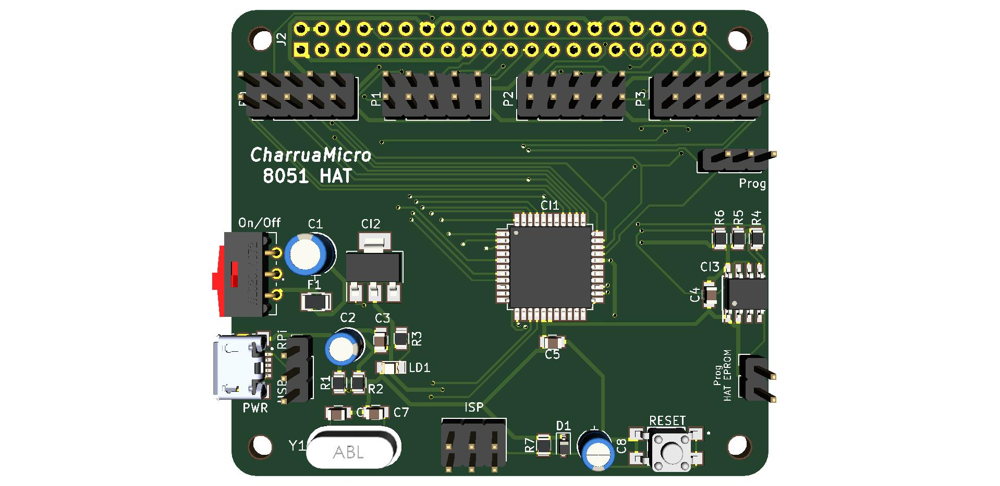

Introdução¶
O 8051 HAT é uma placa para ensino sobre o microcontrolador 8051, desenvolvida especialmente para ser utilizada em conjunto com um microcomputador Raspberry Pi 3. Pode também ser utilizada em modo isolado, sendo para tal necessário recorrer a um programador ISP, como por exemplo o USB ASP.
O microcontrolador que equipa este HAT é o AT89S8253 da Microchip, uma dos derivados do 8051 original e totalmente compatível com a família MCS-51, possui 12Kb de memória flash de programa e 2Kb de memória EEPROM.
Esta placa é vocacionada para o ensino de microcontroladores 8051, e tem por base um conjunto de ferramentas de desenvolvimento totalmente abertas e gratuitas em Linux.
Raspberry Pi¶

O Raspberry Pi é um computador de baixo custo e que tem o tamanho de um cartão de crédito desenvolvido no Reino Unido pela Fundação Raspberry Pi. Para usá-lo, basta ligar um teclado e um rato USB e de seguida ligar tudo a um Monitor ou Televisão.
A função básica do Raspberry Pi é oferecer uma alternativa barata, prática e acessível para que pessoas de várias idades possam explorar todas as capacidades da computação. Além disso, também visa facilitar a aprendizagem de programação em linguagens como Scratch e Python.
Sobretudo, apesar do tamanho diminuto e de aspecto pouco convencional, o Raspberry Pi é um computador como outro qualquer. Isso quer dizer que ele pode servir para navegação na internet, reprodução de conteúdo multimédia, criação de conteúdo em forma de texto, imagens e, é claro, para jogos. Atualmente bastante utilizado como Media Center de complemento à TV, ou como maquina de jogos Arcade.
Especificações¶
O 8051 HAT tem as seguintes características:
- AT89S8253
- Oscilador de 12MHz
- Malha de RESET
- Programação in-circuit
Alimentação:¶
- Regulador de tensão interno
- A placa funciona a 3.3V
- Alimentação a partir do RPi (a partir dos +5V) ou externa (USB) seleccionável
Outros:¶
- EEPROM com as informações do HAT (cumpre com as especificações do Raspberry Pi)
- Header para programação ICSP
- Quase todos os portos de E/S interligam com os GPIO do RPi
- Pode funcionar em modo Stand-Alone